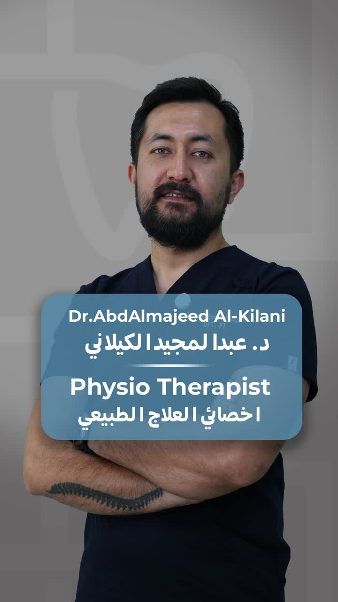

الألم المزمن ليس قدرًا تعيش معه، حركتك الطبيعية قابلة للاستعادة
فريق متخصص من أخصائيي العلاج الطبيعي، بقيادة د. عبدالمجيد الكيلاني، يقدّم برامج علاجية مبنية على تشخيص دقيق لحالتك، تشمل آلام الظهر والرقبة، مشاكل الديسك، وتصحيح قوام الجسم، باستخدام تقنيات يدوية وأجهزة حديثة.

هل تعاني من أي من هذه الحالات؟
كثير من حالات الألم المزمن بالظهر والرقبة يتم التعايش معها لفترة طويلة قبل طلب العلاج المناسب. إذا كنت تعاني من أي مما يلي، من المهم البدء بتقييم مختص:
التشخيص المبكر يقلل من احتمال تفاقم الحالة، ويقصّر مدة العلاج.
احجز جلستكخدمات العلاج الطبيعي بمركزنا
برامج علاجية مصممة حسب حالة كل مريض، بإشراف مباشر من فريق متخصص:
علاج آلام الرقبة والظهر
تخفيف الألم الحاد والمزمن بتقنيات علاج يدوي وتمارين علاجية مستهدفة
علاج وتأهيل الإصابات الرياضية
برامج تأهيل مصممة لإعادتك لنشاطك الرياضي بأمان وأسرع وقت ممكن
علاج وتأهيل قبل وبعد العمليات الجراحية
تجهيز الجسم قبل الجراحة وتسريع التعافي بعدها بخطة مرحلية
علاج الصداع والطنين ومشاكل الفك
معالجة الأسباب العضلية والعصبية للصداع المزمن ومشاكل مفصل الفك
تصحيح قوام الجسد ومشاكل العمود الفقري
تقييم دقيق للقوام وتصحيح الانحناءات لتقليل الضغط على العمود الفقري
علاج مشاكل ديسك الرقبة والظهر (عرق النسا)
بروتوكولات علاجية متخصصة لتخفيف الضغط على الأعصاب وتحسين الحركة